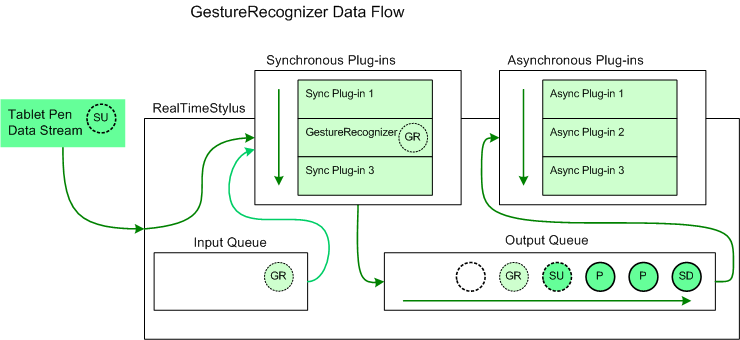

A recognizer plug-in is an object that monitors the movement of the tablet pen for gesture, handwriting, or other objects.
The RealTimeStylus object recognizes system gestures. The RealTimeStylus object adds a SystemGestureData object to the StylusQueues queue in response to the data that finishes the gesture, such as a StylusUpData object for the SystemGesture. For more information, see Plug-in Data and the RealTimeStylus Class.
The GestureRecognizer object implements the IStylusSyncPlugin and IStylusAsyncPlugin interfaces. The GestureRecognizer object recognizes application gestures. Internally, the GestureRecognizer object uses the Microsoft gesture recognizer to perform gesture recognition.
When the GestureRecognizer object recognizes a gesture, it adds custom stylus data to the StylusQueues queue in response to the StylusUpData object for the stroke. The CustomStylusData object's CustomDataId property is set to the GestureRecognitionDataGuid value, and the CustomStylusData object's Data property contains a GestureRecognitionData object.
The following diagram illustrates how the GestureRecognizer object adds data to the tablet pen data.

In this diagram the circle lettered "SD" represents a StylusDownData object and the circles lettered "P" represent PacketsData objects that have already been added to the RealTimeStylus object's output queue and that have not yet been sent to the asynchronous plug-in collection. The circle lettered "SU" represents a StylusUpData object that the RealTimeStylus object is currently processing. It is sent to the synchronous plug-in collection and then placed on the output queue. The circles lettered "GR" represent custom stylus data that is added to the input queue by the GestureRecognizer plug-in in response to the stylus up notification associated with "SU". The custom stylus data lettered "GR" is then passed to the synchronous plug-ins and then to the output queue before the next tablet pen data is processed. The empty circle represents the position in the output queue where future tablet pen data is added.
By default, the GestureRecognizer object recognizes only single-stroke gestures; however, the GestureRecognizer object can be set to recognize multistroke gestures. For multistroke gestures, the CustomStylusData object is added to the StylusQueues queue in response to the StylusUpData object for the final stroke of the gesture. When recognizing multistroke gestures, you may receive notifications for overlapping sets of strokes. For example, the first and second strokes together may be recognized as one gesture and the second stroke by itself may be recognized as a gesture. For more information about multistroke gesture recognition, see the GestureRecognizer class and the MaxStrokeCount property.
If you are using the GestureRecognizer object for multistroke gesture recognition, you may achieve optimal performance by using a cascaded RealTimeStylus model and attaching the GestureRecognizer object to the secondary RealTimeStylus object. For more information about the cascading RealTimeStylus model, see The Cascaded RealTimeStylus Model.
The following list describes other points to take into consideration when using the GestureRecognizer object.
You can create a custom recognizer plug-in that recognizes handwriting, gestures, or other objects by:
Timeline of Mouse Messages and System Events
Â
Â